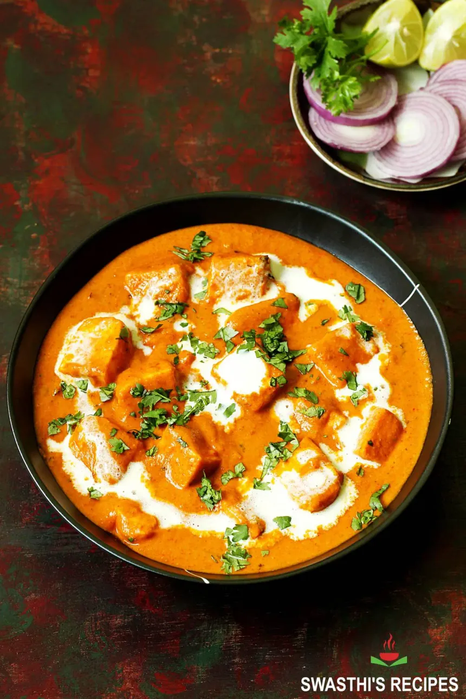

Paneer Butter Masala

Description
Paneer Butter Masala is a rich and creamy dish of paneer (Indian cottage cheese) in a tomato, butter
and cashew sauce.
The acidity of the tomatoes and the sweetness of the cream make for a velvety, nearly addictive sauce.
Paneer butter masala also known as simply butter paneer is a popular Indian recipe. Widely known throughout the
world, that is most of the Indian restaurants have this as main side dish in their menu card.
Buttery, creamy as well as rich side dish for flatbread with Indian cottage cheese Paneer is such a delight for
taste buds. Besides, it is very easy to prepare this at home if you follow the steps.
Since it is widely made in Indian restaurants and households, each have it's own touch. There is no major right
or wrong as long as the base remains same. Let's get started!
Ingredients
- Ripe, red and juicy tomatoes
- Raw Cashews
- Cream
- Butter
- Paneer
- Spices and Herbs
Steps
- Heat 1 teaspoon of oil in a pan on medium heat. Once the oil is hot, add the bay leaf, cinnamon stick,
cloves
and saute for few seconds.
- Then add the the onion, garlic, ginger and saute for 2 to 3 minutes until the onion is translucent.
- Add the tomatoes and cashews and mix. Then add 1 cup of water. Cover the pan and cook on medium heat for 15
minutes.
- After 15 minutes, remove the pan from heat. Remove the bay leaf, cinnamon stick and cloves.
- Let the mixture cool down a bit and then transfer to a blender. It's important to let it cool down a bit
else it
will all blow up from the mixer. Grind the masala to a smooth paste and set aside.
- To the same pan now add 2 tablespoons butter along with remaining 1 teaspoon oil on medium heat.
- Once the butter melts, add the red chili powder and the Kashmiri red chili powder and fry for few seconds.
This
will give the curry a nice orange-red color.
- Then add the ground paste back into the pan along with the garam masala (start with 1/2 teaspoon and add the
remaining 1/4 teaspoon at the end only if you feel like the curry needs that extra bit of garam masala),
cardamom powder, sugar, salt and tomato paste (if using). Mix well and cook for 1-2 minutes.
- Then add the cream and mix.
- Add in the paneer and cook for 2 to 3 minutes on medium heat. Finally add crushed kasuri methi.
- Garnish paneer butter masala with cilantro and serve hot with naan or rice!